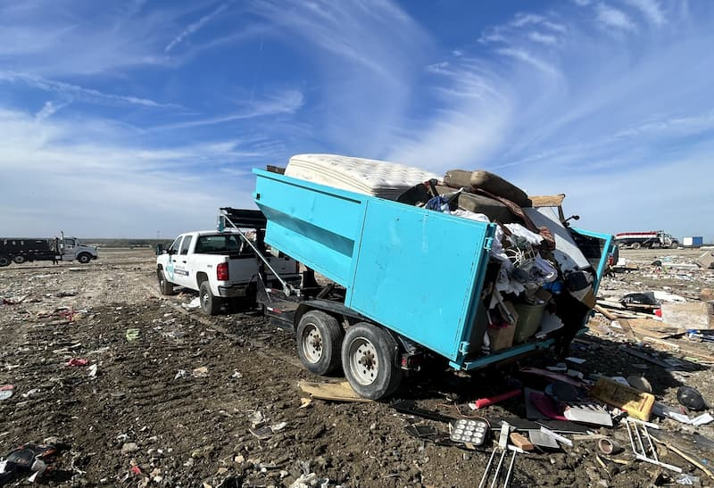

DIY Hauling vs Dumpster Rental: Which Saves You Money?
Think hauling debris yourself will save money? The math might surprise you. Here's a complete cost breakdown comparing DIY hauling to dumpster rental—including the hidden costs most homeowners in Columbus don't consider until it's too late.

A homeowner in Powell called me last month, frustrated and exhausted. He'd just finished his basement cleanout—or so he thought. Over three weekends, he'd made eight trips to the landfill in his pickup truck. He'd spent money on truck rental, gas, dump fees, and a tonneau cover he bought specifically to secure loads. He'd also thrown out his back loading a waterlogged carpet into the truck bed.
"I thought I was saving money by doing it myself," he told me. "But when I added everything up, I spent $387 and three Saturdays of my life. And my back still hurts. I should have just called you in the first place."
He's not alone. I hear this story constantly from Columbus-area homeowners who chose DIY debris hauling thinking it would be cheaper than renting a dumpster—only to discover the hard way that the real cost is far higher than they anticipated.
Let's break down the actual numbers, because the comparison between DIY hauling and dumpster rental isn't as straightforward as it seems. When you factor in everything—not just the obvious costs, but the hidden ones that nobody tells you about—the "cheaper" option often becomes significantly more expensive.
The Real Cost of DIY Debris Hauling: A Complete Breakdown
When homeowners estimate the cost of hauling debris themselves, they usually think about truck rental and dump fees. But that's only part of the picture. Let's look at everything DIY hauling actually costs.
1. Vehicle Costs: Rental or Wear-and-Tear
Unless you own a pickup truck or trailer, you'll need to rent one. And even if you do own one, using it for debris hauling comes with costs most people don't consider.
Truck Rental
If you're renting a pickup truck for your project:
- Home Depot or Lowe's truck rental: $19 for 75 minutes, $129 for 24 hours
- U-Haul pickup truck: $19.95 plus mileage (typically $0.89-0.99 per mile)
- Enterprise or Penske: $75-150 per day depending on size and insurance
Reality check: That $19 Home Depot rental sounds cheap until you realize you'll need it multiple times. For a typical basement cleanout or renovation requiring 4-5 trips to the dump, you're looking at either multiple 75-minute rentals (rushing to beat the clock) or a full-day rental for each trip day.
Typical cost for 4-5 dump runs: $100-200 in rental fees alone.
Using Your Own Vehicle
Think using your own truck is free? Not quite. Hauling heavy debris accelerates wear-and-tear:
- Suspension and brake wear from repeated heavy loads
- Tire wear from overloading
- Fuel efficiency reduction when hauling maximum capacity
- Potential damage to truck bed from sharp debris (drywall screws, metal edges, broken glass)
- Scratches and dents from loading and unloading heavy materials
While harder to quantify, these costs are real. A bed liner replacement costs $450-800. New shocks: $400-600. One scratched or dented panel: $500-1,500 to repair properly.
2. Fuel Costs: More Than You Think
The Columbus-area landfills aren't next door. Depending on where you live and which facility you use, you're looking at substantial mileage.
Typical Distances to Disposal Facilities
- From Dublin to Rumpke Waste Recycling (London, OH): 46 miles round trip
- From Hilliard to Rumpke Columbus: 32 miles round trip
- From Powell to Waste Management facility: 38 miles round trip
At current gas prices ($3.20/gallon average in Columbus) and typical truck fuel economy when loaded (12-14 mpg), here's what fuel costs for multiple trips:
- 3 trips from Dublin: 138 miles = ~10 gallons = $32 in gas
- 5 trips from Hilliard: 160 miles = ~12 gallons = $38 in gas
- 5 trips from Powell: 190 miles = ~14 gallons = $45 in gas
These numbers assume direct trips. If you're renting a truck and returning it between trips, double the mileage and fuel costs.
3. Landfill Disposal Fees: Every Load Adds Up
Municipal dumps and private landfills charge tipping fees based on weight or volume. In the Columbus area, residential disposal fees typically range from $40-60 per load for standard debris.
What most people don't realize: Fees vary by material type and can be significantly higher for certain debris:
- General household debris: $40-50 per pickup truck load
- Construction debris: $50-60 per load
- Roofing materials: $60-80 per load (shingles are heavy and require special handling)
- Appliances: $15-30 each (refrigerators require freon removal first)
- Tires: $3-5 each
For a typical cleanout or renovation requiring 4-5 trips:
Disposal fees alone: $200-300
4. Time Investment: What's Your Time Worth?
This is the cost most people completely overlook. Your time has value—even if you're not billing by the hour.
Time Required for DIY Hauling
For each trip to the dump, factor in:
- Truck pickup/rental: 30-45 minutes (if renting)
- Loading debris into truck: 45-90 minutes depending on volume and weight
- Drive to landfill: 20-40 minutes each way (40-80 minutes round trip)
- Waiting and unloading at facility: 20-45 minutes (facilities often have lines on weekends)
- Return truck (if renting): 20-30 minutes
Total time per trip: 2.5-4 hours
For a project requiring 5 trips, you're investing 12.5-20 hours of your time just on debris hauling.
What's that time worth to you? Even at a conservative $25/hour (less than minimum value for skilled professionals), 15 hours represents $375 in opportunity cost. Could you be working side jobs? Spending time with family? Actually finishing your renovation instead of spending your entire weekend driving back and forth to the dump?
5. Equipment and Supplies
DIY hauling requires more than just a truck. You'll need:
- Tarps or tonneau cover: $30-200 (required by law in Ohio for unsecured loads)
- Bungee cords or ratchet straps: $15-40
- Work gloves: $10-20 (cheap ones fall apart; good ones cost more)
- Safety glasses: $10-15
- Dust masks: $15-25 for a proper box
Estimated equipment costs: $80-300 depending on what you already own and what you need to buy.
6. Safety Risks and Potential Costs
This is the category nobody thinks about until something goes wrong. DIY hauling comes with real safety risks that can result in significant costs.
Injury Risk
- Back injuries from lifting heavy or awkward debris (carpet, drywall, furniture)
- Cuts and punctures from sharp materials (metal, glass, nails)
- Falls from climbing in and out of truck beds
- Strain injuries from repetitive lifting over multiple trips
A single ER visit for a back injury costs $1,000-3,000 even with insurance. Lost work time? That's additional income you're sacrificing.
Vehicle Overloading
In Ohio, it's illegal to exceed your vehicle's Gross Vehicle Weight Rating (GVWR). Overloading can result in:
- Traffic citations: $150-500 depending on overage
- Voided insurance: If you're in an accident with an overloaded vehicle, your insurance may deny the claim
- Suspension/brake damage: Hundreds to thousands in repair costs
Unsecured Load Violations
Ohio Revised Code 4513.31 requires all loads to be properly secured. An unsecured load citation costs $150-180, plus potential liability if debris falls onto the road and causes an accident.
The True Cost of DIY Hauling: A Real-World Example
Let's put all these costs together with a realistic scenario: a homeowner in Worthington doing a basement cleanout after a flood. The debris includes water-damaged carpet, drywall, old furniture, and various household items.
Scenario: Basement Cleanout - DIY Hauling
Project requirements: 5 truckloads to fully clear the basement
Cost breakdown:
- Truck rental (2 full days, splitting trips): $258
- Fuel (190 miles total at 13 mpg, $3.20/gal): $47
- Landfill disposal fees (5 loads at $50 each): $250
- Tarp and straps (didn't own them): $65
- Work gloves and masks: $25
- Subtotal: $645
Hidden costs:
- Time investment: 18 hours over 2 weekends
- Missed Saturday work opportunity (freelance work): $400
- Chiropractor visit for back strain from lifting wet carpet: $85
- Total real cost: $1,130
This homeowner thought he was "saving money" by not renting a dumpster. Instead, he spent over $1,100, sacrificed two weekends, and threw out his back in the process.
Dumpster Rental: The Complete Cost Breakdown
Now let's look at what the same project costs with a dumpster rental from Streamline Dumpsters.
What You Pay
Streamline Dumpsters Pricing
Base price: $299
Included in this price:
- 14-yard dumpster (holds 4-5 pickup truck loads)
- Delivery to your property
- 3 full days of rental
- 4,000 lbs weight capacity
- Pickup and disposal of all contents
- Driveway protection boards
- Same-day delivery available (no extra charge)
Sales tax (8%): $23.92
Your total: $322.92
That's it. No fuel costs. No rental returns. No multiple trips. No back injuries.
What You Get Beyond Just a Dumpster
The $322.92 price includes disposal, but the value goes far beyond that:
Time Savings
Instead of spending 12-20 hours making multiple trips to the dump, you spend maybe 30 minutes total:
- 10 minutes when the dumpster arrives (showing placement, asking questions)
- Fill it at your own pace over three days
- Call when you're ready for pickup—we handle the rest
Time saved: 11-19 hours that you can spend finishing your project, working, or with your family.
Convenience and Flexibility
- Work at your own pace - Fill the dumpster over hours or days, not rushed 75-minute rental windows
- No sorting or planning loads - Everything goes in one container instead of strategically loading truck beds
- No vehicle weight concerns - Let us worry about proper hauling; you focus on your project
- Three full days included - Projects often take longer than expected; you have built-in flexibility
Safety
- Ground-level loading - Walk debris into the dumpster; no climbing in/out of truck beds
- One-and-done approach - Reduced repetitive lifting compared to loading/unloading multiple truck trips
- Proper disposal guaranteed - We ensure all materials go to appropriate facilities; no risk of violations
The Break-Even Analysis: When Does Each Option Make Sense?
Let's be honest: there are scenarios where DIY hauling can make financial sense. But they're more limited than most people think.
When DIY Hauling Might Work
DIY debris hauling can be cost-effective if all of these conditions are true:
- You own a suitable truck - No rental costs, and you don't mind the wear-and-tear
- Very small project - 1-2 truckloads maximum (garage corner cleanout, small bathroom demo)
- You're close to the dump - Less than 10 miles round trip, minimal fuel cost
- You have plenty of free time - Your time isn't worth much on that particular day, or you genuinely enjoy the trip
- Debris is light and easy to handle - No heavy materials, no injury risk
- No time pressure - Project can be completed over multiple weeks if needed
If even one of these conditions doesn't apply, dumpster rental quickly becomes the better financial choice.
When Dumpster Rental Makes More Sense
Dumpster rental is the clear winner when:
- You don't own a truck - Rental fees eliminate any cost advantage of DIY
- Project generates 3+ truckloads - At this point, multiple dump fees plus time investment exceed dumpster cost
- Heavy or bulky materials - Concrete, roofing shingles, flooring, appliances, furniture
- Renovation or construction project - Contractors need debris removal that doesn't disrupt work flow
- Your time has value - If you could be working, billing clients, or spending time on priorities beyond dump runs
- Physical limitations - Back problems, age, or health concerns make repeated heavy lifting risky
- Time-sensitive project - Estate sales, move-out deadlines, permit expirations
Real Scenarios: Which Option Wins?
Let's compare three common Columbus-area projects to see which approach actually saves money.
Scenario 1: Kitchen Renovation in Dublin
Project: Full kitchen demo—cabinets, countertops, flooring, some drywall
Debris volume: Estimated 4-5 pickup loads
DIY Hauling Cost:
- Don't own a truck; rent from U-Haul for 2 days: $180
- Mileage to dump (5 trips, 46 miles each): $40 rental mileage fee
- Fuel (230 miles at 13 mpg): $56
- Dump fees (5 loads at $55 each, construction debris): $275
- Tarp rental from U-Haul: $15
- Time: 16 hours over two weekends
- Total cost: $566
- Plus: Two full weekend days sacrificed
Dumpster Rental Cost:
- 14-yard dumpster from Streamline: $299 + tax = $322.92
- Time: 30 minutes total interaction
- Total cost: $322.92
Winner: Dumpster rental saves $243 and 15.5 hours
Scenario 2: Garage Cleanout in Hilliard
Project: Cleaning out accumulated items, old furniture, yard waste, household goods
Debris volume: Estimated 3 pickup loads
DIY Hauling Cost:
- Own a pickup truck: $0 rental
- Fuel (96 miles at 13 mpg): $24
- Dump fees (3 loads at $45 each): $135
- Already own tarp and straps: $0
- Time: 9 hours over one weekend
- Total out-of-pocket: $159
- Plus: Full Saturday sacrificed
Dumpster Rental Cost:
- 14-yard dumpster: $322.92
- Time: 30 minutes
- Total cost: $322.92
Analysis: DIY hauling saves $163.92 in this scenario—if you value your time at zero and don't factor in truck wear-and-tear. If your Saturday is worth anything to you (family time, side work, actual rest), the dumpster becomes the better value. At just $18/hour for your 9 hours of work, the costs equalize.
Scenario 3: Basement Remodel in Powell
Project: Gutting finished basement—drywall, framing, flooring, drop ceiling, fixtures
Debris volume: Estimated 6-7 pickup loads
DIY Hauling Cost:
- Truck rental (3 days split over 2 weekends): $387
- Fuel (266 miles at 13 mpg): $65
- Dump fees (7 loads at $52 average): $364
- Equipment (didn't have proper gear): $90
- Time: 21 hours over three weekends
- Total cost: $906
- Plus: Three weekends and significant physical strain
Dumpster Rental Cost:
- 14-yard dumpster: $322.92
- Project took 5 days; extra 2 days at $15/day: $30
- Total weight: 4,200 lbs (200 lbs over; 200 × $0.03): $6
- Subtotal: $358.92 + tax on overage: $359.40
- Time: 45 minutes total
- Total cost: $359.40
Winner: Dumpster rental saves $546.60 and 20+ hours of back-breaking work
The Hidden Costs You Can't Put a Price On
Beyond dollars and cents, there are costs that don't appear on any invoice but matter tremendously:
Stress and Mental Energy
Renovations and cleanouts are already stressful. Adding 15-20 hours of dump runs, load planning, and driving increases that stress significantly. The mental burden of "I still need to make three more trips this weekend" hangs over your project like a dark cloud.
With a dumpster, you throw debris in as you go. It's out of sight, out of mind. Your focus stays on the actual project, not logistics.
Project Momentum
There's tremendous value in momentum during a project. When you're forced to stop demolition because your truck is full, then spend 2-3 hours making a dump run, you lose momentum. You get tired. You lose motivation.
A dumpster sitting in your driveway means you can work continuously. Demo all day Saturday if you want. The debris has somewhere to go, and you maintain forward progress.
Relationship Costs
How many times can you ask your friend with a truck for help before it becomes awkward? How many weekends will your spouse tolerate you spending all day Saturday driving to the dump instead of family time?
These costs are real, even if they're not financial. A $323 dumpster rental can preserve relationships that repeated requests for truck-borrowing favors might strain.
When DIY Hauling Actually Makes Sense: The Honest Truth
I run a dumpster rental business, so you might think I'd never recommend DIY hauling. But that's not true. There are legitimate scenarios where handling it yourself is the smart financial choice.
The One-Trip Project
If your project genuinely generates one pickup truck load or less—maybe you're cleaning out a garden shed or disposing of a single piece of furniture—DIY hauling makes perfect sense. One trip to the dump costs $45-60. That's far less than a dumpster rental.
The Ongoing Decluttering Project
If you're slowly decluttering your house over months, making occasional trips to the dump as you identify items to discard, DIY works. You're not trying to complete a project on a timeline; you're incorporating dump runs into your regular routine.
The "I Genuinely Enjoy It" Factor
Some people actually like making dump runs. If you find it therapeutic to load up your truck and make the drive—if it's an excuse to get out of the house and listen to podcasts—then by all means, do it yourself. Not everything is about pure financial optimization.
Why Streamline Dumpsters Makes More Sense for Most Projects
At the end of the day, this business is my life, and I'm committed to providing value that goes beyond just a metal container in your driveway.
No Hidden Fees, No Surprises
When I quote you $299 + tax, that's what you pay. Period. No fuel surcharges. No rush fees for same-day delivery. No surprise charges when we pick up the dumpster.
Compare that to the "hidden costs" of DIY hauling—the fees you don't realize until you're adding up receipts at the end of your project.
Same-Day Delivery When You Need It
Your contractor is ready to start demo tomorrow morning instead of next week? Book before 2 PM and we'll deliver today. No extra charge. No frantic calls to truck rental places trying to adjust your reservation.
Three Days Included, Extensions Available
Unlike competitors who charge per day from delivery, our rentals include three full days. Most projects fit comfortably within that timeframe. Need longer? It's just $15 per additional day—no complex pricing tiers, no penalties for taking the time you need.
Direct Communication with the Owner
When you call Streamline Dumpsters, you're talking to me. Not a call center in another state. Not a franchise coordinator. Me, the person who will deliver your dumpster and pick it up.
Questions about placement? I'll answer them. Need to adjust your pickup date? Call me. Wondering if your debris will fit? Let's talk through it.
This level of service isn't possible with DIY hauling, and it's rare in the dumpster industry. But it's how I run my business, because your project matters and details matter.
The Bottom Line: What Actually Saves You Money
For projects generating more than 2 truckloads of debris, dumpster rental almost always costs less than DIY hauling when you factor in the complete cost—including time, vehicle wear, safety risks, and opportunity costs.
Even in scenarios where DIY hauling appears slightly cheaper on paper, the time savings alone often tips the scale toward dumpster rental. Your time has value, and spending 15 hours making dump runs represents significant opportunity cost that rarely justifies the $100-150 you might save in direct costs.
Quick Decision Guide
Choose DIY Hauling if:
- Your project generates 1-2 truckloads maximum
- You own a suitable truck
- You're within 10 miles of a disposal facility
- You have abundant free time and don't mind multiple trips
- You're slowly decluttering over weeks/months, not completing a project
Choose Dumpster Rental if:
- Your project generates 3+ truckloads
- You don't own a suitable truck
- You value your time and want to focus on the project, not logistics
- You have any time pressure or deadline
- Your debris includes heavy materials (concrete, roofing, flooring)
- You want to avoid injury risk from repeated heavy lifting
- You prefer one-and-done convenience over multiple weekend trips
Real Customer Experience: The True Cost Comparison
That homeowner from Powell I mentioned at the start of this article—the one who spent $387 on DIY hauling and threw out his back? He called me for his next project six months later.
"I've got a garage renovation coming up," he said. "I know I said I'd do the hauling myself again, but honestly, last time wasn't worth it. What would a dumpster cost?"
I told him: "$299 plus tax. $322.92 total. Same-day delivery if you need it, three days included, up to 4,000 lbs."
There was a pause. "That's it?"
"That's it."
"So I would have saved money and my back if I'd called you the first time?"
"Probably. But you know that now. And I'm happy to help with your garage project."
He booked the dumpster. I delivered it on a Wednesday morning. He filled it over the weekend working at his own pace—no rushing to beat rental return deadlines, no planning loads, no four-hour dump runs. I picked it up Monday morning. His total bill: $322.92.
No back injury. No lost weekends. No regrets.
Ready to Save Time, Money, and Your Back?
If you're planning a renovation, cleanout, or construction project in the Columbus area, let's talk about whether a dumpster makes sense for you. I'm not going to pressure you into something you don't need—if your project is genuinely small enough that DIY hauling makes sense, I'll tell you.
But if you're facing 3+ truckloads of debris, multiple dump runs, and weekends of hauling work, a dumpster rental will save you money and time while eliminating the stress and injury risk.
14-yard dumpster: $299 + tax = $322.92 total
Includes delivery, pickup, three days rental, 4,000 lbs capacity, and driveway protection. Same-day delivery available at no extra charge throughout Dublin, Hilliard, Powell, Upper Arlington, Worthington, and the greater Columbus area.
- Book online: Quick online booking available 24/7
- Call with questions: (614) 636-2343 to discuss your project
- Same-day service: Book before 2 PM for delivery today
Stop spending your weekends making dump runs. Spend them finishing your project instead—or better yet, enjoying your newly renovated space.
Because your time is valuable, your back is irreplaceable, and your project deserves better than endless trips to the landfill.